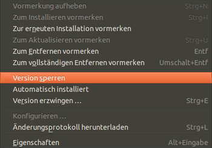
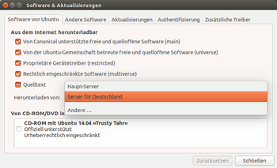
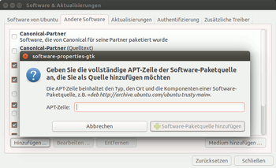
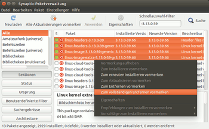

Synaptic
Dieser Artikel wurde für die folgenden Ubuntu-Versionen getestet:
Dieser Artikel ist größtenteils für alle Ubuntu-Versionen gültig.
Zum Verständnis dieses Artikels sind folgende Seiten hilfreich:
 Der Synaptic Package Manager
Der Synaptic Package Manager  ist ein Programm zur grafischen Paketverwaltung. Es dient als Oberfläche für APT und ermöglicht die komfortable Installation bzw. Deinstallation von Paketen.
ist ein Programm zur grafischen Paketverwaltung. Es dient als Oberfläche für APT und ermöglicht die komfortable Installation bzw. Deinstallation von Paketen.
Bis einschließlich Ubuntu 11.04 war Synaptic noch in der Standardinstallation enthalten. Ab Ubuntu 11.10 wurde es je nach Ubuntu-Variante durch Programme wie Ubuntu Software, das Software-Center oder das Lubuntu Software Center abgelöst.
Synaptic gilt dennoch weiterhin als ein mächtiges Werkzeug nicht nur für Fortgeschrittene, weil es viele Sonderfunktionen enthält, die seinen Nachfolgern fehlen.
Installation¶
Man kann das Programm über das folgende Paket installieren [1]:
synaptic (universe)
 mit apturl
mit apturl
Paketliste zum Kopieren:
sudo apt-get install synaptic
sudo aptitude install synaptic
Für die Installation unter Kubuntu benötigt man zusätzlich ein weiteres Paket:
software-properties-gtk
mit apturl
Paketliste zum Kopieren:
sudo apt-get install software-properties-gtk
sudo aptitude install software-properties-gtk
Will man im Programm die Schnellsuche nutzen, benötigt man noch zusätzlich folgendes Paket:
apt-xapian-index
mit apturl
Paketliste zum Kopieren:
sudo apt-get install apt-xapian-index
sudo aptitude install apt-xapian-index
Wenn bei der Installation eine Fehlermeldung bezüglich Python erscheint, kann diese ignoriert werden. Damit der Filter in Synaptic integriert wird, führt man dann noch folgenden Befehl aus.
sudo update-apt-xapian-index -vf
Bedienung¶
Synaptic befindet sich je nach Ubuntu-Variante im Menü unter
Xubuntu: "System -> Synaptic-Paketverwaltung"
Lubuntu: "Systemwerkzeuge -> Synaptic-Paketverwaltung"
Ubuntu MATE: "System -> Systemeigenschaften -> Synaptic-Paketverwaltung"
Da in Ubuntu und Ubuntu GNOME kein Menü mehr vorhanden ist, benutzt man den Programmnamen zur Suche. Beim Start wird das Administrator-Passwort [2] abgefragt. So wird die unbefugte oder unbeabsichtigte Installation oder Deinstallation von Programmen verhindert.
Programme installieren¶
Ein Programm zu installieren ist eigentlich ganz leicht: kennt man den Namen des Paketes, kann man dieses mit einem Klick auf "Suchen" heraussuchen. Sollte das Paket wider Erwarten nicht gefunden werden, muss man eventuell noch weitere Paketquellen freischalten (siehe unten). Natürlich kann man auch die einzelnen Sektionen ( -Klick auf "Sektion" unten links) nach neuen Paketen durchstöbern.
-Klick auf "Sektion" unten links) nach neuen Paketen durchstöbern.
Hinweis:
In manchen Ubuntu-Versionen gibt es auch eine sogenannte Schnellsuche. Diese führt unter Umständen zu anderen Ergebnissen als die traditionelle Suche mit Strg + F .
Ein  -Klick auf das gewünschte Paket öffnet ein Kontextmenü, in dem sich das Paket "Zum Installieren vormerken" lässt. Eventuell öffnet sich jetzt ein Fenster mit dem Titel "Notwendige Änderungen vormerken?". Hier werden abhängige Pakete automatisch mitinstalliert, die für die Ausführung des gewünschten Programms notwendig sind.
-Klick auf das gewünschte Paket öffnet ein Kontextmenü, in dem sich das Paket "Zum Installieren vormerken" lässt. Eventuell öffnet sich jetzt ein Fenster mit dem Titel "Notwendige Änderungen vormerken?". Hier werden abhängige Pakete automatisch mitinstalliert, die für die Ausführung des gewünschten Programms notwendig sind.
Zur Installation der vorgemerkten Pakete -klickt man in der Symbolleiste auf "Anwenden". In einem Fenster wird noch einmal eine Zusammenfassung aller Änderungen aufgezeigt.
Achtung!
Es kann auch vorkommen, dass Pakete entfernt werden sollen, weil diese zum Beispiel in Konflikt mit einem anderen stehen. Man sollte sich genau durchlesen, was in diesem Dialog steht, um hinterher nicht mit einem unbrauchbaren System dazustehen!
Paketsammlung nach Aufgabe installieren¶
Unter dem Menüpunkt "Bearbeiten -> Pakete nach Aufgaben vormerken" kann man komplette Paketgruppen nach einem Aufgabenbereich auswählen. Dazu gehören z.B. das Installieren einer vollständigen Desktop-Umgebung oder die Installation von typischen Server-Komponenten wie z.B. bei einer LAMP-Installation.
Unter Umständen müssen die Paketsammlungen erst installiert werden. Dazu siehe tasksel.
Versionen sperren oder erzwingen¶
Hinweis:
Beim Sperren von Versionen ist es wichtig, dass es keine Version in einer Quelle mit der gleichen Versionsnummer gibt. Das Paket würde dann trotzdem automatisch aktualisiert werden.

Es gibt Situationen, in denen man eine bestimmte Version eines Programms installieren oder behalten möchte, beispielsweise eine ältere Version, obwohl in den Update-Quellen eine neuere Version verfügbar ist, oder es soll ein von Hand kompiliertes Programmpaket installiert werden, das jedoch von der Paketverwaltung immer wieder überschrieben wird, weil die Paketversion beim Erstellen des Paketes nicht korrekt übernommen wurde.
Man erreicht diese Optionen, indem man ein Paket anklickt und dann im Menü
"Paket -> Version sperren" bzw. "Paket -> Version erzwingen"
auswählt. Voraussetzung ist, dass in den Paketquellen verschiedene Versionen angeboten werden.
Pakete konfigurieren¶
Bei konfigurierbaren Paketen ist der Menübefehl
"Paket -> Konfigurieren..."
aktiv. Dadurch können z.B. verkonfigurierte Programme wieder in den Ausgangszustand versetzt und ggf. neu eingerichtet werden.
Paketquellen freischalten/aktivieren¶
Die Paketquellen kann man in Synaptic über das Menü "Einstellungen -> Paketquellen" konfigurieren. Weitere Informationen findet man im Artikel Paketquellen. Diesen Artikel sollte man vor dem Fortfahren gelesen haben.
Standardquellen nutzen¶
Hinweis:
Viele Benutzer verwirrt das Aktivieren dieser Paketquellen über Synaptic. Es empfiehlt sich daher, dies nicht über die GUI zu machen, sondern über einen Texteditor [3]. Eine einfache Anleitung mit einer Beispielliste dazu findet sich im Artikel sources.list.

Nach der Installation sind normalerweise die Internet-Quellen für main, restricted, multiverse und universe schon eingetragen. Man sollte drauf achten, dass man nur die Einträge bearbeitet, bei denen "Ubuntu ... (Binär)" steht. Die Einträge mit "Ubuntu ... (Quellen)" sind nur erforderlich, wenn man selber Programme aus dem Quellcode kompilieren möchte. Es gibt vier unterschiedliche Möglichkeiten für Binär-Einträge (siehe Paketquellen):
"Ubuntu ..."
"Ubuntu ... Aktualisierung"
"Ubuntu ... Sicherheit"
"Ubuntu ... Backports"
Nach dem "Schließen" müssen die Paketquellen mit einem -Klick auf "Neu laden" neu eingelesen werden. Ein Hinweisfenster weist darauf hin.
Weitere Paketquellen hinzufügen¶
 Gelegentlich wird Software aus weiteren Paketquellen benötigt. Diese Fremdpaketquellen sind z.B. in der folgenden Form angegeben:
deb http://archive.czessi.net/ubuntu trusty main restricted universe multiverse
Im Folgenden wird eine Paketquelle beispielhaft hinzugefügt.
Hinweis!
Zusätzliche Fremdquellen können das System gefährden.
Man wählt zuerst "Einstellungen -> Paketquellen".
Nun auf "Hinzufügen" klicken und "Benutzerdefiniert" wählen.
Nun kann die gewünschte Paketquelle eingegeben werden. Ein simples "Copy & Paste" mit Maus oder Tastatur direkt aus dem Wiki-Artikel minimiert dabei etwaige Tippfehler.
Zum Schluss "Kanal hinzufügen" auswählen, im Paketquellenfenster auf "Ok"
-klicken.
Nach dem Eintragen muss die Quelle erst durch einen -Klick auf "Neu laden" eingelesen werden.
Experten-Info:
Man kann auf diesem Weg auch Ubuntu Source-Paketquellen eintragen, was aber per direkter Bearbeitung der sources.list einfacher geht. Zusätzlich kann man nur auf der Kommandozeile diese Quellpakete auch herunterladen, ohne sie zu installieren.
PPA-Quellen können auch in Form der folgenden Zeile eingefügt werden:
ppa:LAUNCHPAD_TEAM/PPA_NAME
Dabei wird auch gleich der Signierungsschlüssel für dieses PPA importiert und die Quelle somit authentifiziert. Für andere Fremdquellen oder ältere Ubuntuversionen kann dies wie im Folgenden beschrieben nachgeholt werden.
Quelle als vertrauenswürdig einstufen¶
Wenn man bei der Paketinstallation aus Fremdquellen nicht immer eine Warnmeldung sehen möchte, dass die Quelle nicht authentifiziert werden kann, empfiehlt es sich, diese als vertrauenswürdig einzustufen. Dazu gibt es in den meisten Wiki-Anleitungen (oder alternativ auf den Webseiten der Betreuer) eine GPG-Schlüsseldatei, die man einfach nur herunterladen muss.
Danach kann man diese über "Einstellungen -> Paketquellen -> Echtheitsbestätigung -> Schlüsseldatei importieren" einlesen und die Quelle kann authentifiziert werden.
Eine Schritt-für-Schritt Anleitung für das Hinzufügen der APT-Zeile und des PGP-Schlüssels gibt es als Video .
CD/DVD als Paketquelle hinzufügen¶
Um eine CD/DVD als Paketquelle hinzuzufügen, wählt man "Bearbeiten -> CD hinzufügen" und legt die CD ein, die eingelesen werden soll. Es ist kein Problem, mehrere CD-Quellen einzutragen, auch wenn man nur ein CD-Laufwerk besitzt. Bei Paketen, die auf einer anderen CD liegen, wird man aufgefordert, diese einzulegen.
Besten Server wählen¶
Relativ versteckt in Synaptic gibt es einen Test, um den jeweils schnellsten Spiegelserver ("download mirror") herauszufinden. Man navigiert zu "Einstellungen -> Paketquellen -> Software von Ubuntu -> Herunterladen von: Andere... -> Besten Server auswählen". Dann wird ein kurzer Test ausgeführt, der den schnellsten "Mirror" auswählt, was aber auch von Versuch zu Versuch variieren kann.
Pakete entfernen¶

Um ein Paket zu entfernen, klickt man dieses einfach an und wählt per -Klick im Kontextmenü "Zum Entfernen vormerken". Wichtig: Beim einfachen Entfernen eines Paketes bleiben Konfigurationsdateien - z.B. in /etc - zurück. Möchte man dies verhindern, so kann man die Option "Zum vollständigen Entfernen vormerken" wählen. Dies löscht alles, inklusive der Konfigurationsdateien. Dateien im Homeverzeichnis eines Benutzers bleiben davon grundsätzlich unberührt - die Paketverwaltung löscht niemals Daten aus /home!
Automatisch installierte Abhängigkeiten entfernen¶
Automatisch installierte abhängige Pakete werden in Synaptic nicht entfernt, wenn man das Ursprungspaket deinstalliert. Diese Pakete werden in der Rubrik "Status -> Installiert (Nicht mehr benötigt)" aufgeführt. Sie können gefahrlos ausgewählt und vollständig entfernt werden.
Einen weiteren Weg ermöglicht die Chronik unter "Datei -> Verlauf". Dort werden die Vorgänge der letzten Zeit gegliedert angezeigt. Auch eine Suchfunktion ist vorhanden. Auf diese Art und Weise kann man nachverfolgen, welche Pakete (als Abhängigkeiten) zusätzlich installiert wurden, und sie manuell entfernen. Die Chronik funktioniert allerdings nur zuverlässig, wenn man ausschließlich Synaptic zur Installation oder Deinstallation nutzt.
Heruntergeladene Pakete entfernen¶
Pakete, die installiert wurden, werden normalerweise nach dem Herunterladen in einem speziellen Cache-Archiv (/var/cache/apt/archives) gespeichert. Auf diese Art kann man ein Paket reinstallieren, ohne es neu herunterladen zu müssen. Der Nachteil ist, dass dieses Archiv mitunter recht groß werden kann. Um es zu leeren, wählt man "Einstellungen -> Einstellungen -> Dateien -> Alle Paketdateien im Zwischenspeicher löschen". Man kann dort auch angeben, welche heruntergeladenen Pakete aufgehoben werden sollen. Dazu ist ein Video verfügbar.
Defekte Pakete reparieren¶
Ab und zu kann es passieren, dass "kaputte" Pakete gemeldet werden, insbesondere wenn man ein Paket manuell installiert, ohne dessen Abhängigkeiten zu erfüllen. In diesem Fall hilft der Menüpunkt "Bearbeiten -> Defekte Pakete reparieren" weiter. Es werden nun entweder die Abhängigkeiten aufgelöst - falls möglich - oder alternativ das defekte Paket wieder entfernt.
Automatische Aktualisierung¶
Unter dem Punkt "Einstellungen -> Paketquellen -> Internet-Aktualisierungen" kann man die Einstellungen für die automatischen Aktualisierungen ("automatic updates") festlegen. So kann man beispielsweise einstellen, wie oft nach neuen Paketversionen gefragt werden soll. Hilfreich ist oft die Option "Sicherheitsaktualisierungen ohne Bestätigung installieren", um automatisch immer alle Aktualisierungen aus der Sektion ...-security zu erhalten, ohne dies bestätigen zu müssen.
Paketlisten¶
Synaptic kann auch Paketlisten erstellen, was nützlich ist, um auf mehreren Rechnern exakt die gleiche Software zu installieren. Allerdings muss man darauf achten, dass alle Rechner auch dieselben Paketquellen benutzen.
Liste erzeugen¶
Die Liste lässt sich über "Datei -> Vorgemerkte Änderungen speichern unter..." generieren. Möchte man wirklich eine vollständige Liste aller installierten Pakete sichern, so muss die Option "Gesamte Paketauswahl und nicht nur Änderungen sichern" gesetzt werden.
Paketliste einlesen¶
Diese gesicherte Liste kann über das Menü unter "Datei -> Vorgemerkte Änderungen einlesen..." wieder eingelesen werden. Nach der Auswahl der Listendatei werden die Änderungen durch "Anwenden" übernommen und die Installation der neuen Pakete gestartet.
Skripte zum Herunterladen von Paketen¶
Hat man einen langsamen oder begrenzten Internetzugang, so kann man sich Paketlisten erstellen lassen, diese dann auf einem Rechner mit schnellen Internetzugang herunterladen lassen und anschließend lokal installieren.
Die Menüoption "Datei -> Erstelle Skript zum Herunterladen der Pakete" erstellt ein Shell-Skript, das bei Ausführung alle vorgemerkten Pakete in das aktuelle Verzeichnis herunterlädt. Zur Ausführung des Skripts muss wget vorhanden sein, was auf allen gängigen Unix/Linux-Systemen der Fall ist. Das generierte Skript dann beispielhaft so aus:
1 2 3 4 | #!/bin/sh
wget http://de.ubuntu.com/ubuntu/pool/main/b/beispiel/beispiel1_2.0.55-4ubuntu2.1_all.deb
wget http://de.ubuntu.com/ubuntu/pool/main/w/weiteresbeispiel/weiteresbeispiel2_1.0.10-4_all.deb
...
|
Es lässt sich also problemlos ausführen und manipuliert auf dem ausführenden System nichts.
Skript unter Windows ausführen¶
Das generierte Skript lässt sich auch als Batch-Datei (.bat) auf einem Windows-System ausführen. Einzige Voraussetzung ist wget für Windows  . Dazu speichert man das erstellte Skript und
. Dazu speichert man das erstellte Skript und wget.exe in einem beliebigen Verzeichnis ab, benennt das Skript in z.B. download.bat um und führt es mit einem Doppelklick aus.
Hinweis:
Evtl. muss man das Download-Skript mit dem Windows-Editor öffnen und die Zeilenumbrüche kontrollieren.
Heruntergeladene Pakete einbinden¶
Die mit der o.g. Methode heruntergeladenen Pakete können mit "Datei -> Heruntergeladene Pakete hinzufügen" eingebunden werden. Dies erlaubt es, auf einfache Weise alle benötigten Pakete auf einem anderen Rechner mit schnellerer Internetanbindung herunterzuladen und mit Synaptic zu installieren.
Hinweis:
Synaptic erwartet an dieser Stelle einen Ordner als Quelle. Einzelne Pakete können mit Synaptic nicht installiert werden (dazu siehe Paketinstallation DEB).
Problembehebung¶
Defekte Cache-Dateien entfernen¶
Es kann vorkommen, dass Synaptic beim Start sofort wieder beendet wird und auf der Kommandozeile den Fehler Segmentation fault meldet. Um dieses Problem zu beheben, müssen die defekten Cache-Dateien gelöscht werden [2][4]. Anschließend werden die Paketinformationen aktualisiert:
sudo rm /var/cache/apt/*.bin
sudo apt-get update
Gesperrte Pakete werden aktualisiert¶
Ein klassisches Problem ist, das gesperrte Pakete unter bestimmten Umständen dennoch aktualisiert werden. Dieses Problem tritt allerdings nur auf, wenn man Synaptic und den Befehl sudo apt-get dist-upgrade abwechselnd nutzt. Daher sollte man sich in der Praxis entweder auf Synaptic oder die Kommandozeilenbefehle rund um apt-get beschränken - aber nicht beide vermischen (siehe auch aptitude).
 Übersichtsartikel
Übersichtsartikel- Erstellt mit Inyoka
-
 2004 – 2017 ubuntuusers.de • Einige Rechte vorbehalten
2004 – 2017 ubuntuusers.de • Einige Rechte vorbehalten
Lizenz • Kontakt • Datenschutz • Impressum • Serverstatus -
Serverhousing gespendet von